A NBA é organizada de forma a criar uma temporada dinâmica, competitiva e cheia de eventos
que atraem
fãs do mundo inteiro. A liga não se resume apenas aos jogos: ela é composta por várias fases e
competições que acontecem ao longo do ano, cada uma com objetivos diferentes dentro da temporada.
A seguir, estão as principais partes que formam a estrutura da NBA
TEMPORADA REGULAR
A Temporada Regular é o coração do calendário da NBA.
Ela funciona como a fase onde os 30 times disputam jogos para definir suas posições na
classificação.
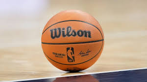
Bola Wilson em jogo.
Como funciona:
Cada equipe joga 82 partidas.
Times enfrentam adversários da própria conferência mais vezes, mas também jogam contra equipes da
outra conferência.
Vitória vale 1 ponto moral, mas a classificação é medida pelo número de vitórias — quem tem mais
vitórias fica na frente.
O que é definido nessa fase:
Os 6 primeiros colocados de cada conferência avançam diretamente aos Playoffs.
Os times entre 7º e 10º lugar vão para o Play-In.
Os times abaixo disso estão eliminados.
COPA DA NBA (IN-SEASON TOURNAMENT)
A Copa da NBA é o novo torneio introduzido para trazer mais competitividade
e emoção ao início da temporada. Ela funciona como uma disputa paralela à Temporada Regular,
mas contando com jogos oficiais que valem para a classificação.
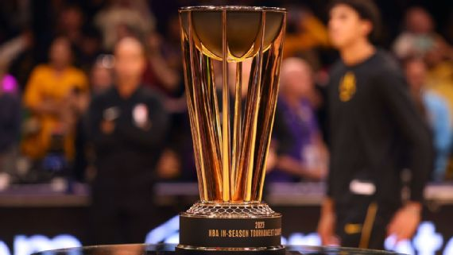
Troféu da Copa da NBA.
Como funciona:
Os 30 times são separados em grupos por conferência.
Todos jogam entre si dentro do grupo.
Os melhores avançam para as fases eliminatórias.
As semifinais e a final acontecem em Las Vegas.
O objetivo do torneio:
Aumentar a competitividade no início da temporada.
Dar aos jogadores e equipes um título adicional.
Proporcionar novos momentos marcantes dentro do ano.
NBA ALL-STAR WEEKEND
O All-Star Weekend é o evento mais festivo e especial do calendário da NBA.
Ele reúne celebridades, jovens talentos e as maiores estrelas da liga em um fim de semana
cheio de disputas, entretenimento e performances.
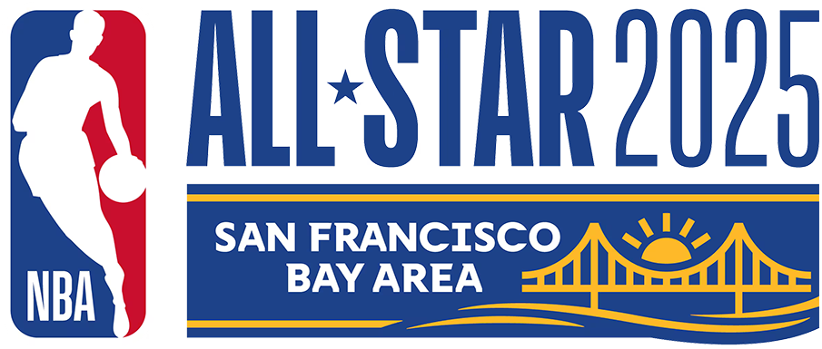
Logo oficial do NBA All-Star.
O que acontece no All-Star Weekend:
Jogo das Celebridades.
NBA Rising Stars (jogo dos novatos e segundanistas).
Skills Challenge (Desafio de Habilidades).
Three-Point Contest (Torneio de 3 Pontos).
Slam Dunk Contest (Torneio de Enterradas).
All-Star Game, o grande jogo das estrelas.
Por que o evento é tão importante:
É um show para fãs do mundo inteiro.
Celebridades e atletas se misturam ao basquete.
Grandes momentos históricos acontecem nos torneios.
PLAY-IN
O Play-In é uma fase criada para aumentar a competitividade e evitar que times
desistam cedo da temporada. Nele, as equipes que terminam entre 7º e 10º lugar de cada
conferência disputam as últimas vagas para os Playoffs.
Logo do Play-In Tournament.
Como funciona:
7º x 8º: vencedor garante vaga nos Playoffs.
9º x 10º: perdedor é eliminado.
Perdedor do jogo 7º x 8º enfrenta o vencedor de 9º x 10º.
Quem vencer esse jogo também avança.
Importância do Play-In:
Mantém mais times disputando até o final da temporada.
Aumenta a emoção e imprevisibilidade.
Cria jogos decisivos, como uma “mini-eliminação”.
PLAYOFFS
Os Playoffs são a fase decisiva da NBA, onde cada série é definida no formato
melhor de 7 jogos. É aqui que os grandes duelos e rivalidades acontecem, e onde as equipes
mostram seu máximo nível competitivo.
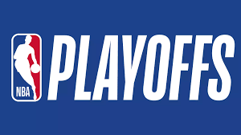
Logo oficial dos Playoffs.
Como funciona:
16 equipes participam (8 de cada conferência).
Série melhor de 7 jogos em todas as fases.
1º vs 8º, 2º vs 7º, 3º vs 6º, 4º vs 5º.
Quem vencer 4 jogos avança.
O que torna os Playoffs especiais:
Jogos extremamente disputados.
Ambientes intensos e apaixonados.
Surgimento de lendas e performances históricas.
FINAIS DA NBA
As Finais da NBA são o momento máximo da temporada. É aqui que os campeões
do Leste e do Oeste se enfrentam para decidir quem será o campeão da liga.
A série é melhor de 7 jogos e costuma ser histórica, marcada por grandes jogadas e
momentos lendários.
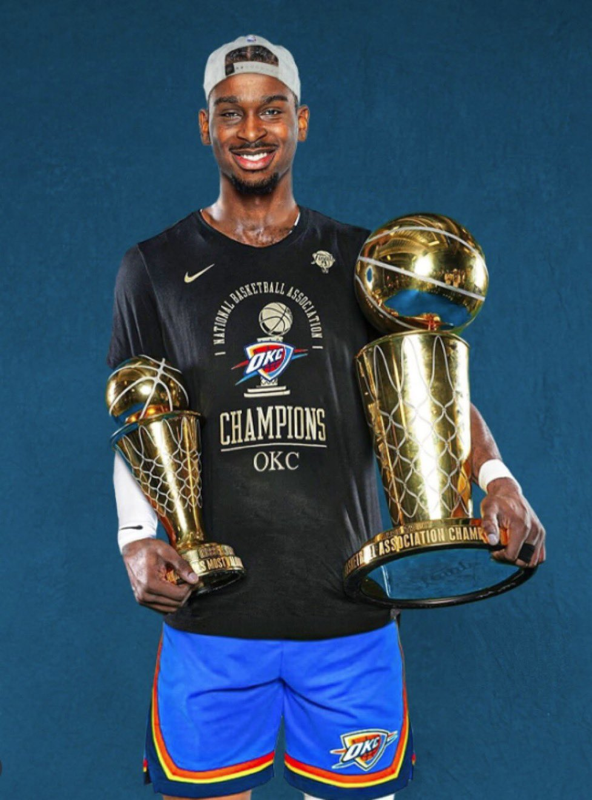
Troféu Larry O’Brien, símbolo da glória máxima, sendo segurado por Shai Alexander
Como funciona:
Campeão da Conferência Leste vs Campeão da Conferência Oeste.
Série melhor de 7 jogos.
O time com a melhor campanha tem mando de quadra.
Por que é tão importante:
Define o campeão da NBA.
Marca carreiras e cria lendas.
É o momento mais assistido da temporada.
EVENTOS DA NBA
NBA DRAFT
O Draft é um dos eventos mais importantes da NBA. Ele define o futuro das franquias,
trazendo novos talentos do basquete universitário, internacional e das ligas de desenvolvimento.
O Draft acontece anualmente, geralmente em junho.
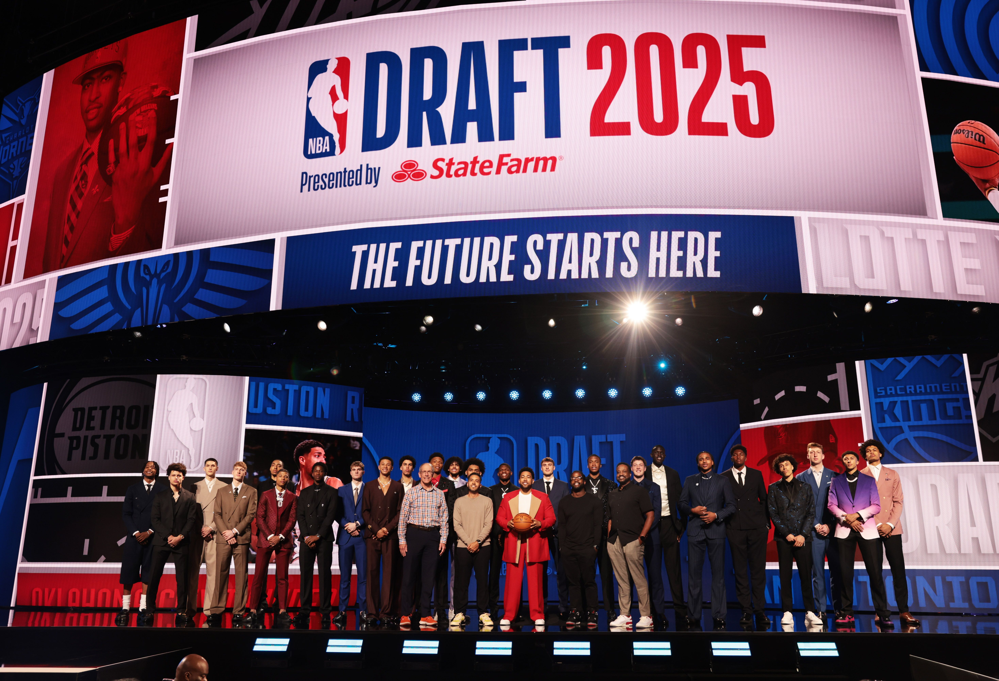
Palco do NBA Draft.
Como funciona:
Participam 60 jogadores divididos em duas rodadas.
As equipes escolhem conforme a ordem definida pela Draft Lottery.
Times podem trocar suas escolhas (picks).
Jogadores universitários, internacionais e da G-League podem participar.
Por que é importante:
Define o futuro das equipes.
Revela novos astros da NBA.
Pode mudar completamente uma franquia.
DRAFT LOTTERY
A Draft Lottery determina a ordem das primeiras escolhas do Draft.
Ela utiliza um sistema de sorteio que dá mais chances para equipes com campanhas piores
na temporada anterior.
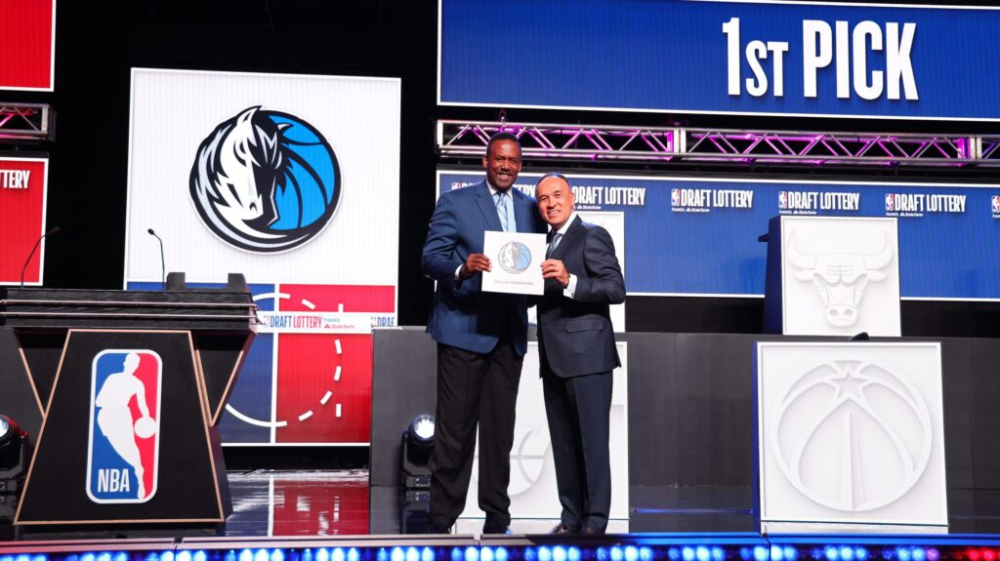
Draft Lottery definindo a primeira escolha.
Como funciona:
Participam os 14 times que ficaram fora dos Playoffs.
As piores campanhas têm mais chances no sorteio.
Define as escolhas de 1º a 14º no Draft.
Importância:
Garante equilíbrio competitivo.
Evita que times percam de propósito (tank).
NBA MEDIA DAY
O Media Day marca o início oficial da nova temporada.
É quando jogadores e técnicos aparecem pela primeira vez para fotos, gravações e entrevistas.
Jimmy Butler durante o Media Day.
O que acontece:
Fotos e vídeos oficiais da temporada são feitos.
Jogadores dão entrevistas coletivas.
Novos elencos são apresentados ao público.
Por que é importante:
Marca o início real da preparação para a temporada.
Mostra a identidade dos times para o novo ano.
TRAINING CAMP & PRESEASON
Antes da temporada começar, os times passam pelo Training Camp,
um período de treinos intensos para definir táticas, testar jogadores e ajustar funções.
Depois disso, acontecem os jogos da Preseason.
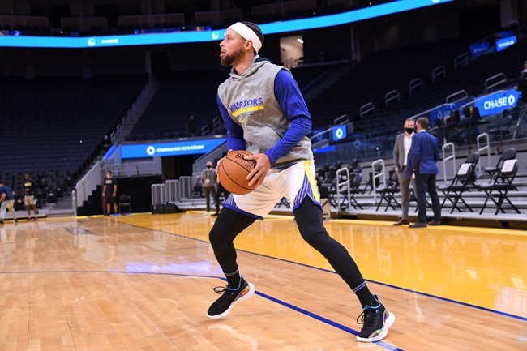
Stephen Curry durante treino.
Training Camp:
Define elenco final.
Treinos táticos e físicos.
Avaliação de novatos e jogadores de contrato curto.
Preseason:
Jogos amistosos entre equipes.
Testes de esquemas táticos.
Preparação para o ritmo de jogo da temporada.
NBA TRADE DEADLINE
O Trade Deadline é o prazo final para trocas entre as equipes durante a temporada.
Acontece entre janeiro e fevereiro.
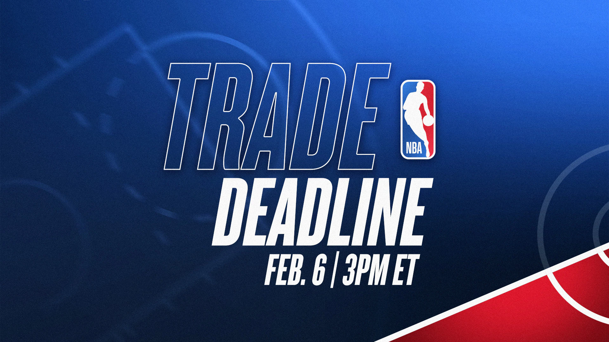
Trade Deadline.
O que acontece:
Times trocam jogadores e escolhas de Draft.
Equipes buscam se reforçar para os Playoffs.
Times em reconstrução acumulam escolhas futuras.
Por que é importante:
Muda completamente o rumo de franquias.
Cria expectativa e movimentação intensa.
NBA AWARDS (PRÊMIOS)
Ao fim da temporada regular, a NBA entrega os prêmios individuais
que reconhecem os melhores jogadores do ano.
Principais prêmios:
MVP – Jogador Mais Valioso.
DPOY – Jogador Defensivo do Ano.
ROY – Novato do Ano.
MIP – Jogador que Mais Evoluiu.
Sexto Homem do Ano.
Coach of the Year.
Times All-NBA, All-Defensive e All-Rookie.
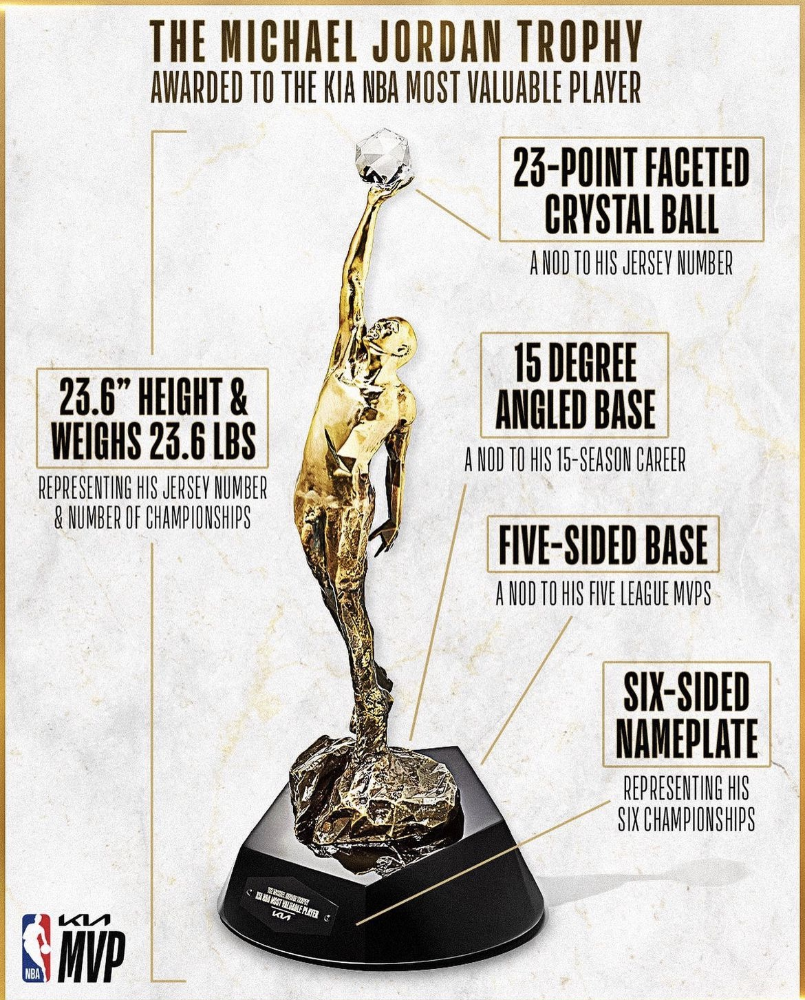
Novo Troféu Michael Jordan MVP.
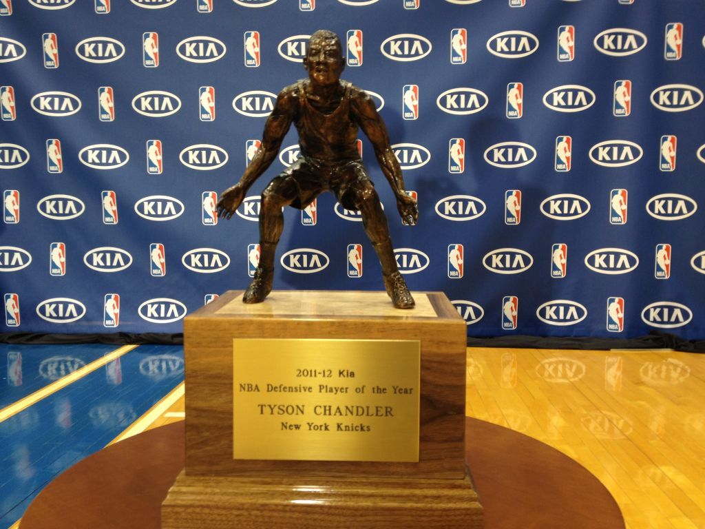
Troféu DPOY.
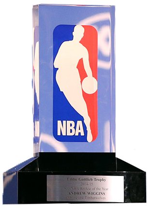
Troféu ROY.
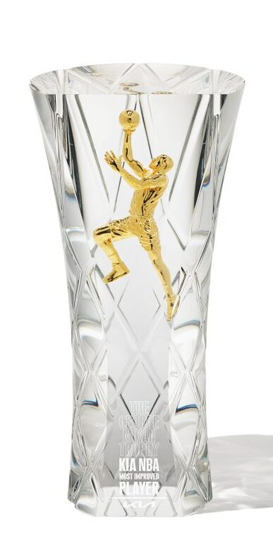
Troféu MIP.
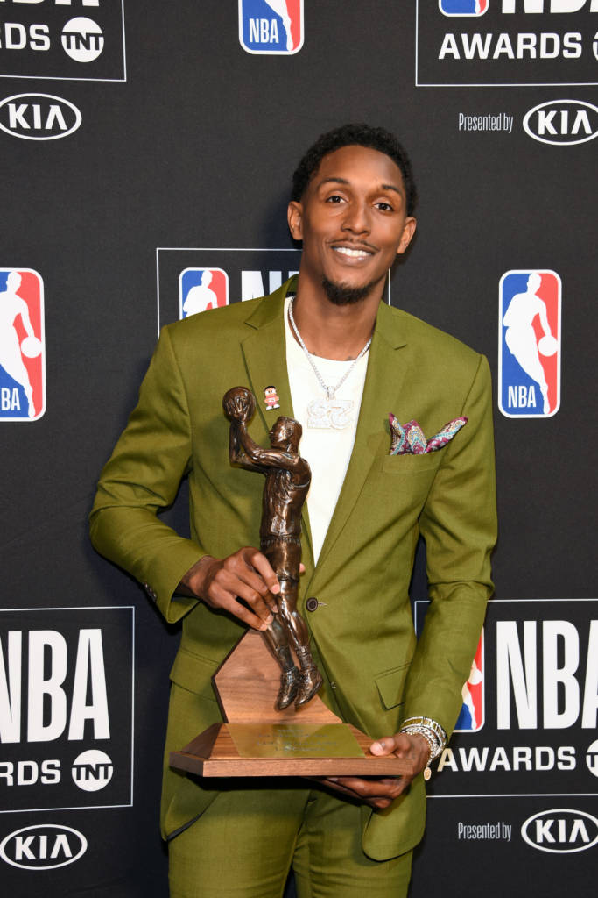
Troféu Sexto Homem do Ano.Troféu Coach of the Year.
HALL DA FAMA
O Hall da Fama do Basquete celebra as maiores lendas da história.
Todos os anos, novos jogadores, treinadores e personalidades são indicados.